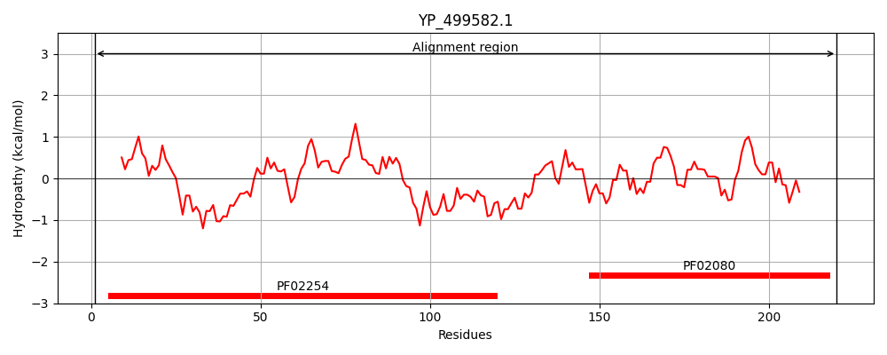
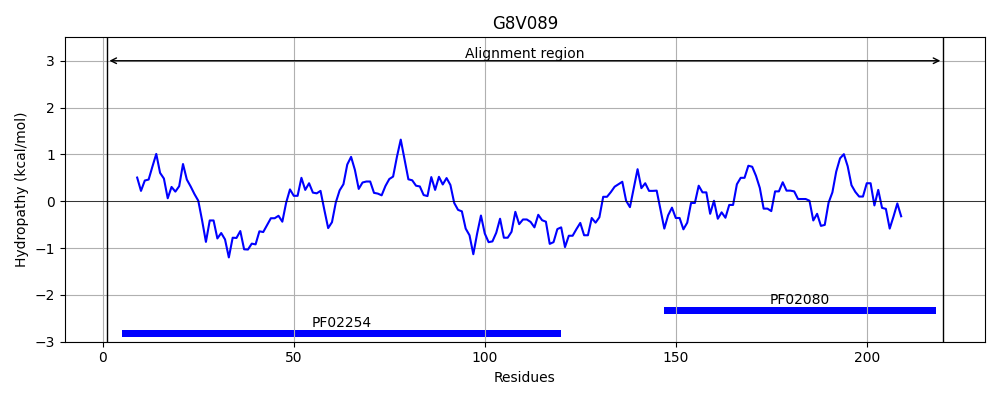
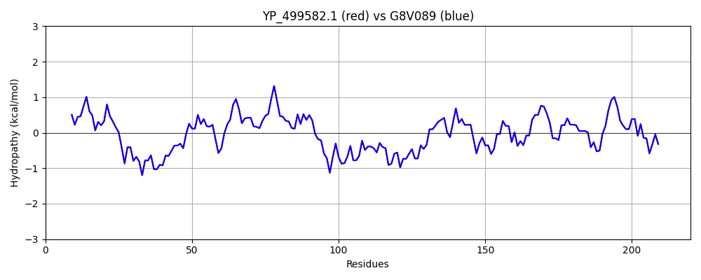

Hit Accession: G8V089
Hit TCID: 2.A.38.4.6
Hit Description: gnl|BL_ORD_ID|4875 gnl|TC-DB|G8V089|2.A.38.4.6 Ktr system potassium uptake protein A OS=Staphylococcus aureus subsp. aureus 11819-97 GN=ktrA PE=4 SV=1
Mach Len: 220
e:0.000000
Query TMS Count : 0
Hit TMS Count: 0
TMS-Overlap Score: 0.000000
Predicted Substrates:CHEBI:8345;potassium(1+)
BLAST Alignment:
Score: 1100 , Bit scores: 428 bits, E-value: 4.1e-155, Alignment length: 220, Percentage identity: 100
Query: 1 MGKEYVVIGLGRFGGSIVRELNALDMDVMAIDHDENRVNEYSDIATHAVVADTTDEAVMKSLGIRNFDHVIVAIGENIQSSTLTTLILKELGVKKVTAKAQNDYHAKILNKIGADTVVHPERDMGRRIAHNVASASVLDYLELADEHSIVELKATEKMAGQSIIDLDIRAQYGINIIAIKRGKEFIISPNPNINLEIGDILIMIGHDNDLNRFEKNIATR 220
MGKEYVVIGLGRFGGSIVRELNALDMDVMAIDHDENRVNEYSDIATHAVVADTTDEAVMKSLGIRNFDHVIVAIGENIQSSTLTTLILKELGVKKVTAKAQNDYHAKILNKIGADTVVHPERDMGRRIAHNVASASVLDYLELADEHSIVELKATEKMAGQSIIDLDIRAQYGINIIAIKRGKEFIISPNPNINLEIGDILIMIGHDNDLNRFEKNIATR
Sbjct: 1 MGKEYVVIGLGRFGGSIVRELNALDMDVMAIDHDENRVNEYSDIATHAVVADTTDEAVMKSLGIRNFDHVIVAIGENIQSSTLTTLILKELGVKKVTAKAQNDYHAKILNKIGADTVVHPERDMGRRIAHNVASASVLDYLELADEHSIVELKATEKMAGQSIIDLDIRAQYGINIIAIKRGKEFIISPNPNINLEIGDILIMIGHDNDLNRFEKNIATR 220 | Protein Hydropathy Plots: |
|---|
|  |  |
Pairwise Alignment-Hydropathy Plot:
|
|---|
|  |